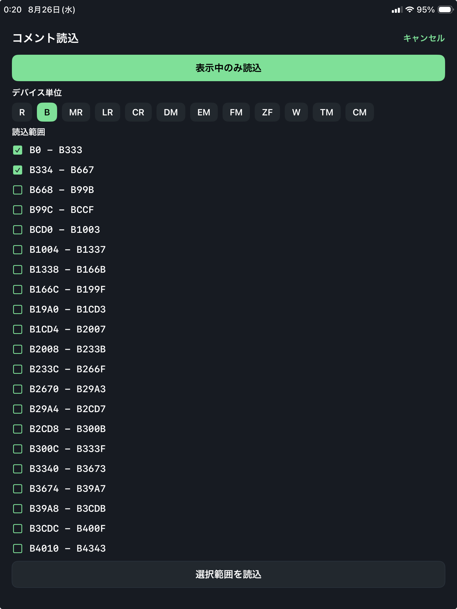

PLC Comment Import
コメント読込
KEYENCE PLC からデバイスコメントを読み込み、監視画面のコメント表示へ反映します。

画面概要
開き方
右上メニューから コメント読込 を開きます。
使用条件
KEYENCE プロジェクトで PLC 接続中のときに使用できます。MELSEC では表示されません。
目的
PLC に登録されているコメントを読み込み、同じプロジェクトの表示コメントとして保存します。
確認先
読込結果はステータス表示で確認します。失敗した場合はエラー履歴も確認してください。
読込方法
表示中のみ読込
現在表示しているリスト／ブロック、または登録中のタイムチャート／トラップのデバイスを対象に読み込みます。
デバイス単位
デバイス種別を選び、読込範囲をチェックして 選択範囲を読込 を実行します。
個別読込
デバイス操作パネルのコメント行に表示される読込アイコンから、選択中デバイス 1 点のコメントを読み込めます。
進捗表示
読込中は処理件数と残り割合が表示されます。中止する場合は キャンセル を使います。
確認手順
- 接続状態を確認するKEYENCE プロジェクトで PLC に接続していることを確認します。
- 読込対象を選ぶ表示中のみ、デバイス単位の範囲、またはデバイス操作パネルからの個別読込を選びます。
- 表示を確認するリスト／ブロック／デバイス操作パネル／タイムチャート登録／トラップ登録・編集で、コメントが更新されているか確認します。
MELSEC の場合
MELSEC では PLC から直接コメントを読むメニューは表示されません。CSV ファイルから取り込む場合は CSVコメント読込 を使用します。